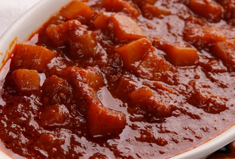

Duba Wot

Description
Duba Wot is a traditional Ethiopian pumpkin stew, celebrated for its comforting flavors and unique combination of spices. Made with tender pumpkin pieces, slow-cooked in a rich, aromatic sauce of onions, garlic, ginger, and berbere, Duba Wot is a perfect balance of sweet and savory. This dish is often enjoyed during the harvest season and is cherished for its warm, hearty taste.
Whether served with injera or rice, Duba Wot offers a delightful vegetarian option that is both nourishing and full of flavor. Its vibrant color and fragrant spices make it an inviting dish for any table, bringing a taste of Ethiopian culture and cuisine to your home.
Ingredients
- Pumpkin: 1 medium-sized pumpkin, peeled, seeded, and cut into bite-sized cubes.
- Onions: 2-3 large red onions, finely chopped.
- Niter Kibbeh: 1/4 cup (clarified spiced butter; can substitute with regular butter or oil if not available).
- Garlic: 3-4 cloves, minced.
- Ginger: 1 tablespoon, minced or grated.
- Berbere: 2-3 tablespoons (Ethiopian spice blend; adjust to taste).
- Tomato Paste: 2 tablespoons.
- Vegetable Broth: 1-2 cups (or water).
- Salt: To taste.
- Black Pepper: To taste.
- Turmeric: 1/2 teaspoon (optional, for added color and flavor).
- Cinnamon Stick: 1 small piece (optional).
- Cardamom Pods: 2-3 pods (optional, for additional flavor).
Steps
- Preparation:
- Prepare the Pumpkin:
- Peel the pumpkin, remove the seeds, and cut it into bite-sized cubes.
- Prepare Ingredients:
- Finely chop the onions.
- Mince the garlic and ginger.
- Measure out the spices and other ingredients.
- Cooking:
- Sauté the Onions:
- In a large pot or skillet, heat the niter kibbeh (or regular butter/oil) over medium heat.
- Add the finely chopped onions and cook, stirring frequently, until the onions become soft and golden brown. This may take about 10-15 minutes.
- Add Garlic and Ginger:
- Add the minced garlic and ginger to the onions. Cook for another 3-5 minutes until fragrant.
- Add Spices:
- Stir in the berbere and turmeric (if using), and cook for 2-3 minutes, allowing the spices to toast and develop their flavors.
- Incorporate Tomato Paste:
- Add 2 tablespoons of tomato paste and mix well with the onion and spice mixture. Cook for another 5 minutes.
- Add Pumpkin Cubes:
- Add the pumpkin cubes to the pot, stirring to coat them with the spice mixture.
- Add Broth and Simmer:
- Pour in 1-2 cups of vegetable broth (or water) to cover the pumpkin.
- Add salt, black pepper, and optional spices like cinnamon stick and cardamom pods.
- Bring to a boil, then reduce the heat to low and cover the pot.
- Simmer Until Tender:
- Let the stew simmer for about 20-30 minutes, or until the pumpkin is tender and cooked through. Stir occasionally and add more broth or water if needed to keep the pumpkin from sticking.
- Adjust Seasoning:
- Taste the stew and adjust seasoning with more salt or spices as needed. Remove the cinnamon stick and cardamom pods if used.
- Serve:
- Serve Duba Wot hot, garnished with fresh coriander or parsley if desired.
- It pairs well with injera (Ethiopian flatbread), rice, or bread.